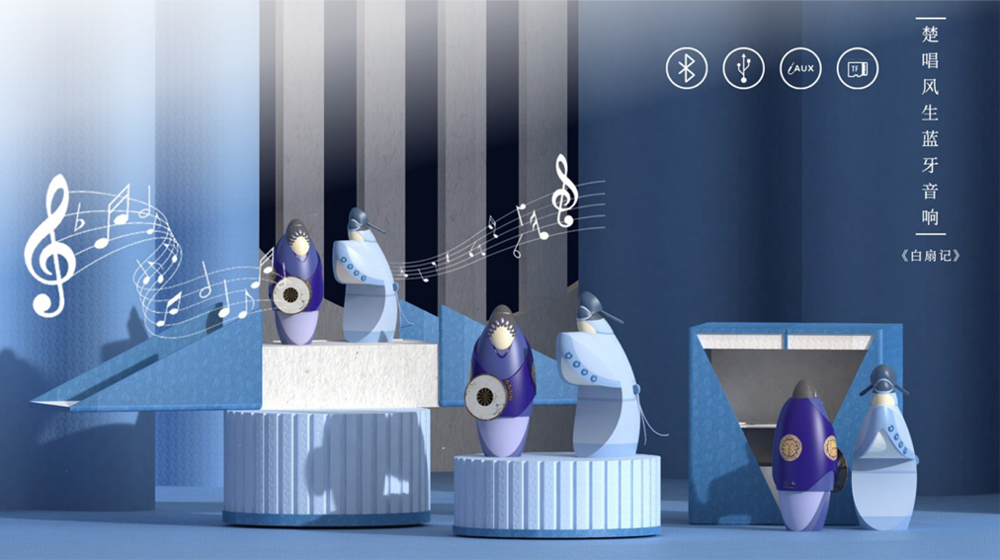
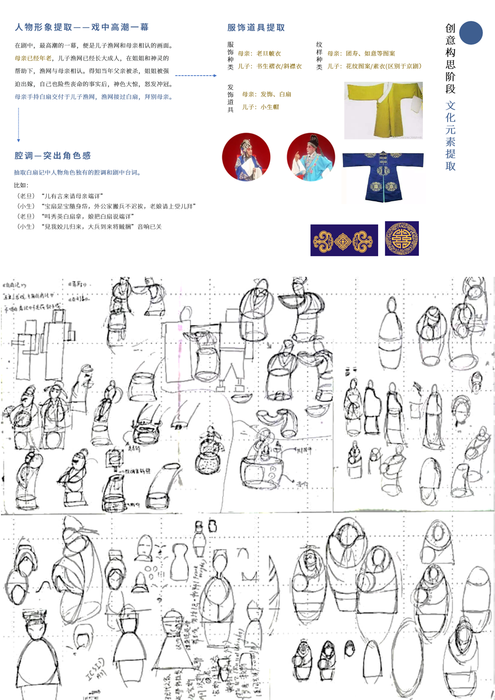
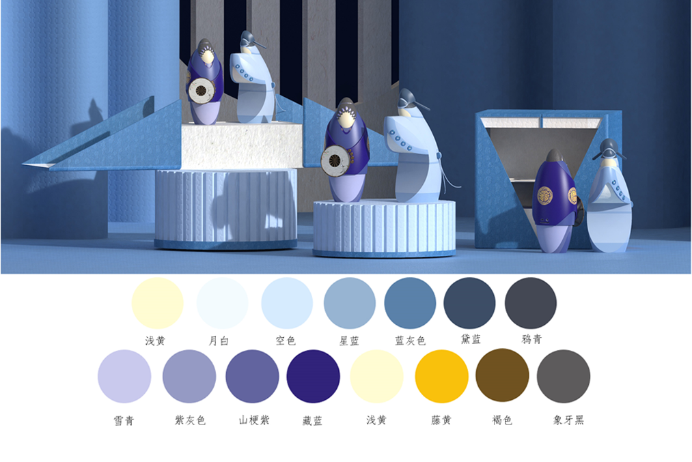
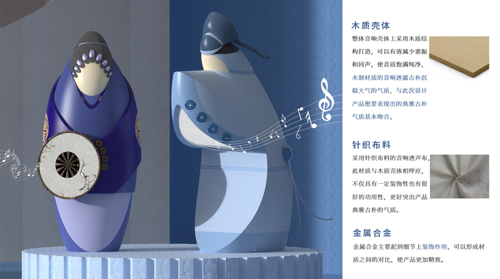
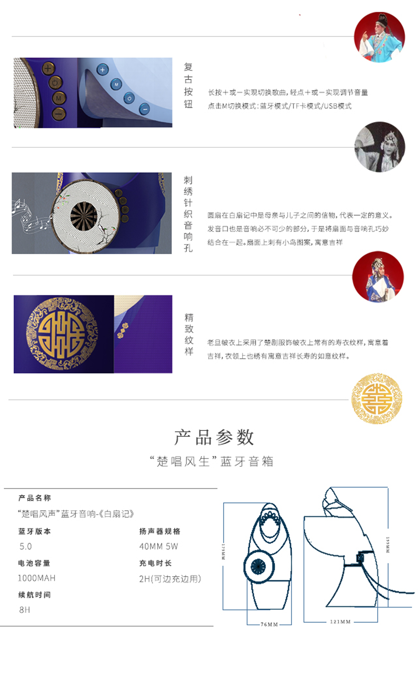
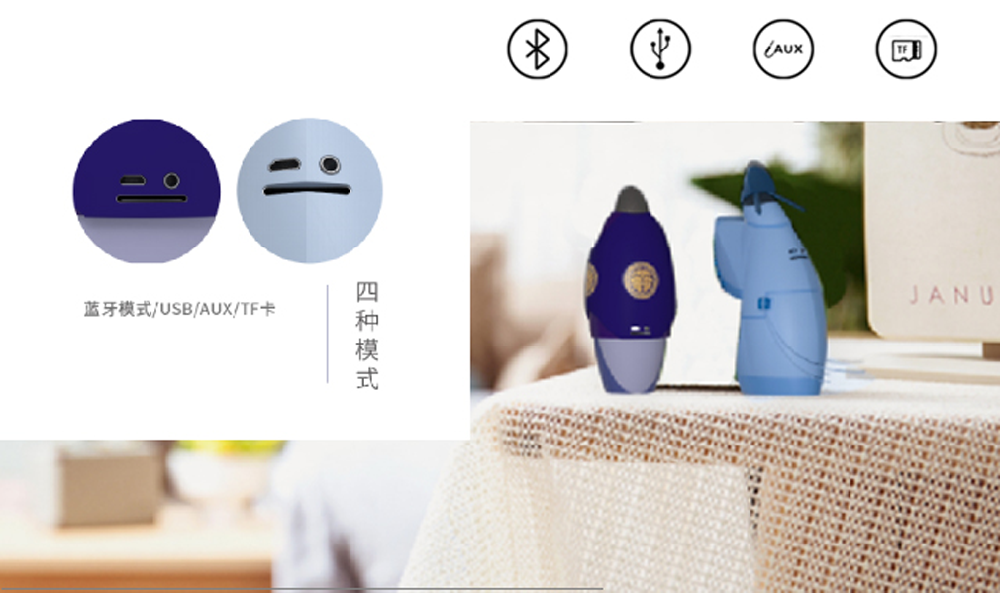
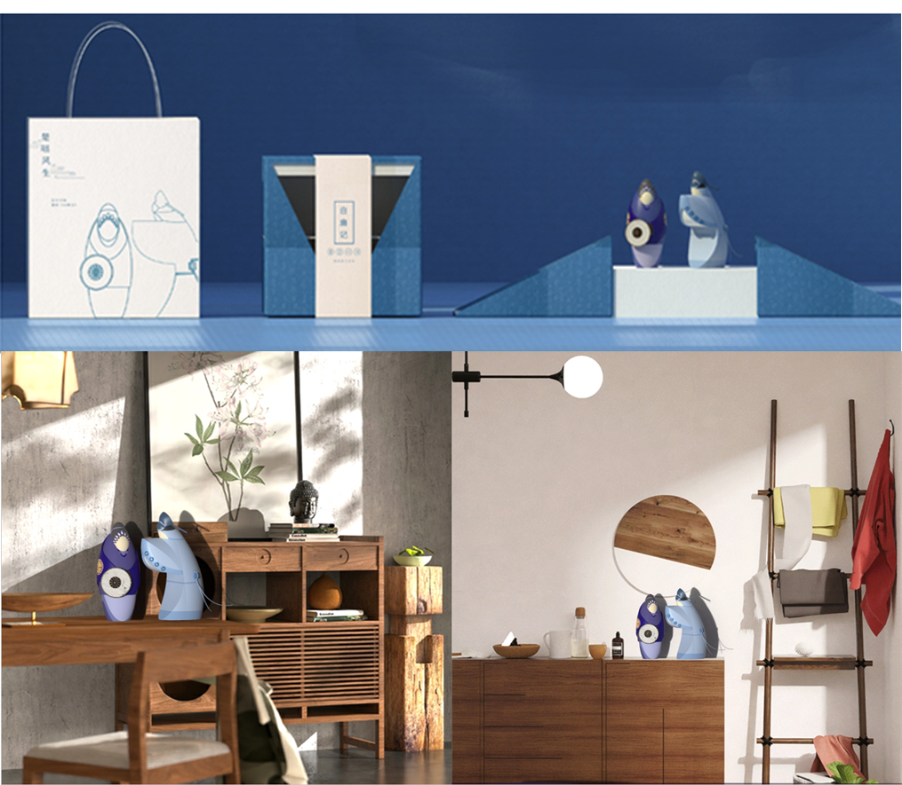
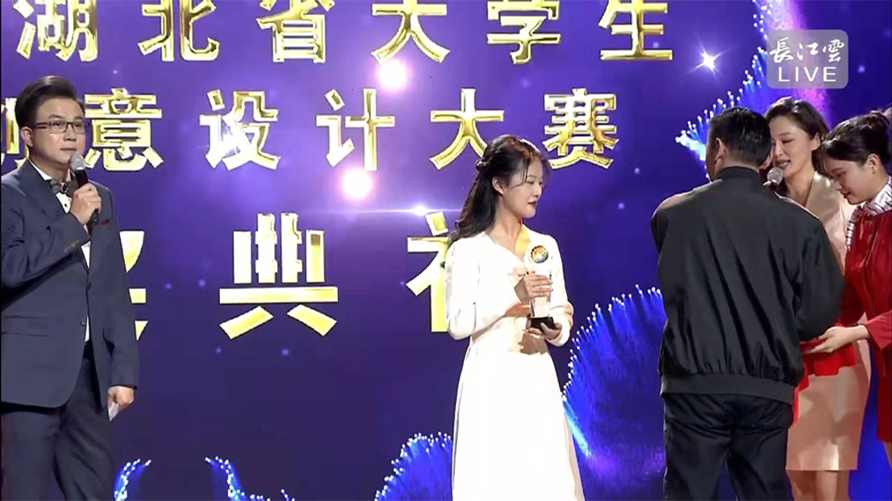
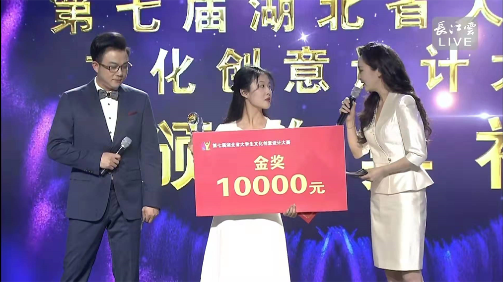

楚唱风生 | Bluetooth audio design based on Chu opera culture
Chu Opera is one of China's intangible cultural heritage. At present, the audience of Chu Opera is generally aging, and the proportion of young people who love Chu Opera is very low. To make Chu opera culture attract more young people, it is necessary to give Chu opera culture a new look, so that more audiences can be familiar with and accept it.
This design takes Chu Opera as the cultural background, audio equipment as the carrier, and Chu Opera "The Story of the White Fan" as the prototype. Combined with the opera fragments of the mother and son in the play, the characters, costumes, props and other cultural elements of the mother and son in the play are extracted for design.
By integrating the characters in Chu opera into the audio equipment, the culture of Chu opera is reproduced.
Creative Idea Process
Color ＆ Material
Taking the characters in the play as a reference, determine the main color direction : purple and blue. Combined with traditional Chinese colors, the set of color matching was finally determined.
The materials are mainly wooden shells and knitted fabrics. The wooden speaker has the characteristics of elegance and warmth, which basically matches the elegant characteristics that this design product wants to show.Knitted fabric sound-transmitting fabric, this material echoes the wooden shell, not only has a certain decorative and good functionality, but also better highlights the elegant features of the product.Metal alloys mainly play a decorative role in details, which can form a contrast between materials and make the product more refined.
Details ＆ Function
Four modes: Bluetooth mode, USB mode, AUX mode, TF card mode
Package Design
In January,2022, This design got Gold Award of the 7th Hubei University Student Cultural and Creative Design Competition
 I am very grateful to the organizing committee of the competition for providing a platform and organizing this competition. During the process, I not only improved my professional ability, but also experienced the colorful culture of Hubei.Then I would like to thank the teachers of industrial design in the School of Art and Design, Wuhan University of Technology for their training and guidance.
I would like to thank Mr. Lv Jiefeng for his enlightenment and guidance on my comprehensive design ability after joining his studio in my second year. Thanks to Teacher Wu Jie ,in the creative product design course taught by the teacher, she inspired me to do the design thinking of cultural and creative design, and guided the design award-winning work - Chu Sing Fengsheng Bluetooth Speaker.
The winning of this competition is a good incentive for my future design path. I will continue to learn and work hard to design better works. thank you to the lovely people who have always supported and encouraged me.
Designer: Ketong Xu Instructor: Associate Professor Jie Wu